Los amuletos son mejoras especiales que el jugador puede equipar para modificar habilidades y estilo de
juego. Cada uno ocupa uno o más espacios de equipamiento (ranuras).
Algunos amuletos destacados:
Ataque rápido (Quick Slash): Permite atacar más rápido con el aguijón
Piedra del chamán (Shaman Stone): Aumenta el daño de los hechizos.
Canción de larvas (Grubsong): Obtienes Alma al recibir daño.
Corazón inquebrantable (Unbreakable Heart): Aumenta la salud máxima.
Maestro de las embestidas (Dashmaster): Mejora la velocidad de deslizamiento.
Todos los amuletos:
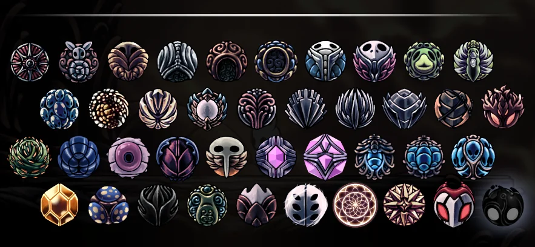
Hechizos
Los hechizos consumen Alma y ofrecen ataques mágicos o habilidades útiles. Se obtienen al avanzar en el
juego.
Hechizos principales
Espíritu vengativo / Alma de la sombra: Lanza un proyectil de Alma hacia adelante.
Zambullida desolada / Oscuridad descendente:Ataque de impacto hacia el suelo que daña a enemigos
cercanos.
Lamentos aulladores / Grito del abismo: Emite un grito ascendente de Alma con gran daño mágico.
DLCs y contenido adicional
Hollow Knight recibió cuatro actualizaciones gratuitas:
Sueños ocultos (Hidden Dreams)
Añade nuevos jefes, mejoras y un sistema de viaje rápido.
La Tropa Grimm (The Grimm Troupe)
Introduce la misión del Ritual Carmesí, nuevos amuletos y el jefe Rey Pesadilla Grimm.
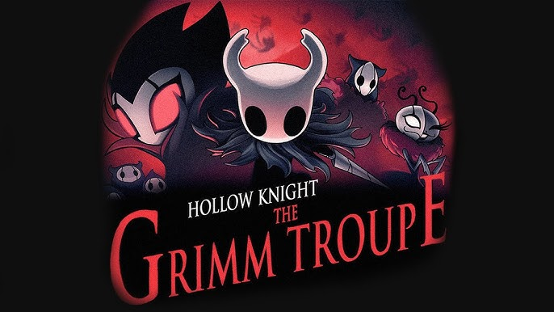
Sangre vital (Lifeblood)
Optimización del juego, mejoras visuales y rediseño del jefe Radiance.
Maestro de los Dioses (Godmaster)
Acceso al Panteón de Hallownest, combates contra todos los jefes, finales secretos y desafíos extremos.
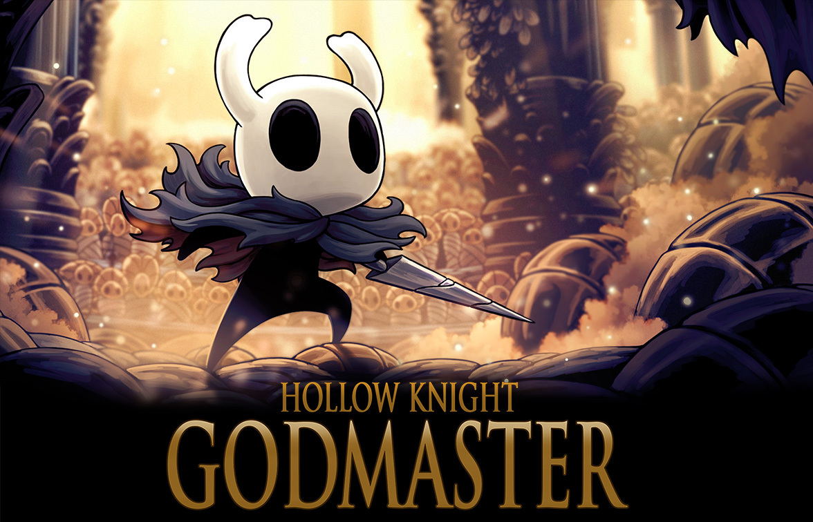
Document
¿Que es Hollow Knight?
Hollow Knight es un juego de accion y aventuras en 2D con estilo metroidvania desarrollado
por el estudio de juegos independiente
Team Cherry. Ambientado en un mundo subterraneo llamado Hollownest, el juego invita al jugador a
explorar vastas regiones interconectadas,
enfrentarse a enemigos desafiantes y descubrir una historia oscura y profunda, su estilo dibujado a mano, su
atmosfera melacolica y su jugabilidad simple pero precisa
lo han posicionado como uno de los titulos indie mas aclamados de los ultimos años.
Historia del juego
El juego transcurre en Hollownest, un reino subterraneo que se encuentra en la ruina, un antaño
floreciente y ahora corronpido por una infeccion que
corronpe a sus habitantes. El jugador controla a un personaje con un aura misteriosa conocida como el el
Caballerito, que se aventura a travez de este mundo desolado
para descubirir su historia, los secretos del reino y un destino ya predilecto.
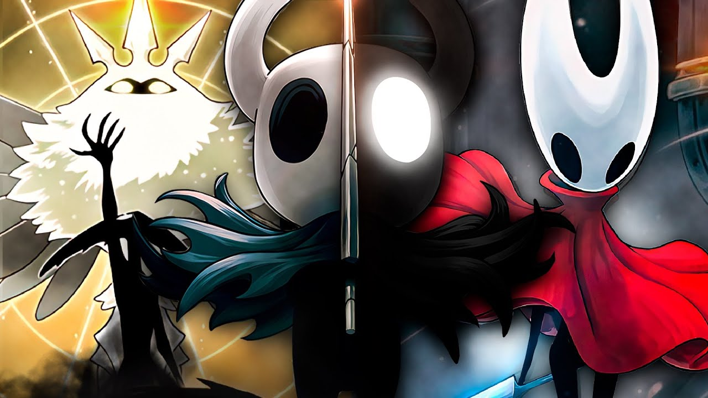
Jugabilidad y Mecanicas Principales
Combate
El combate simple es el núcleo pero con una profundidad tactica que puede llegar a sorprender incluso a los
jugadores mas habiles. El caballerito como arma principal usa
un aguijón, una especie de espada corta, para ejecutar ataques cuerpo a cuerpo. A medida que se se avanza en el
juego, el jugador desbloquea tecnicas de combate adicionales
como:
Ataques Cargados que inflijen mas daño
Hechizos Magicos como proyectiles o explosiones que consumen alma
Golpes aéreos y desendentes que son vitales para el combate en plataformas
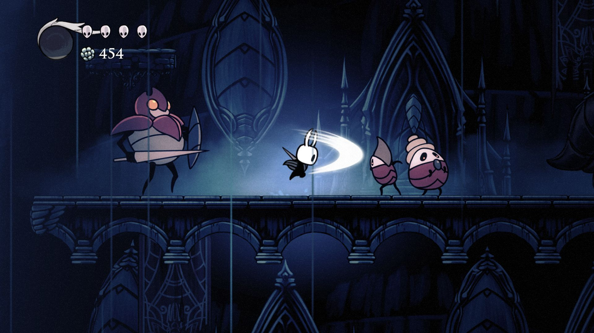
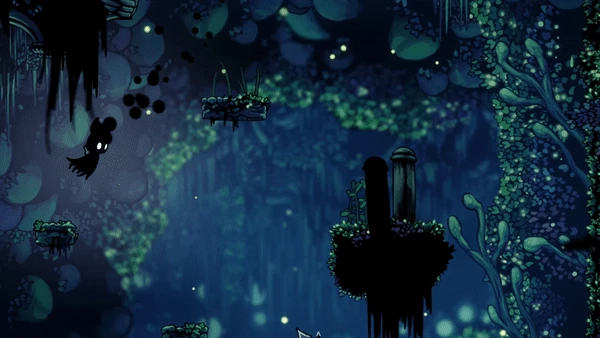
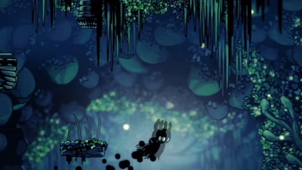
Los enemigos varian desde criaturas simples hasta temibles jefes con patrones de ataque y movimientos complejos.
Cada enfrentamiento requiere de observación y precisión,
ya que muchos de los enemigos puede derrotar al caballerito de pocos golpes.
El juego no ofrece un sistema tradicional de niveles o experiencia la mejora pricipalmente se da a través de
la habilidad del jugador y la adquisición de recursos
como los amuletos y las mejoras del aguijón
Exploración
El mundo de Hollownest es una red interconectada de areas ocultas, llenas de caminos alternativos,
secretos y tesoros. La exploracion no es de forma lineal, es decir
que el jugador puede elejir su propia ruta y descubrir nuevas zonas antes de lo previsto.
Cada region cuenta con su propia ambientación, enemigos unicos, desafios y una ambientacion musical que las
diferencia de las demas, entre algunas de las zonas mas memorables:
La ciudad de las Lagrímas una ambientación lluviosa y melacólica
Nido Profundo un lugar oscuro, laberíntico y lleno de enemigos ostiles
Los Jardines de la Reina una zona verde y pacifica pero engañosamente peligrosa
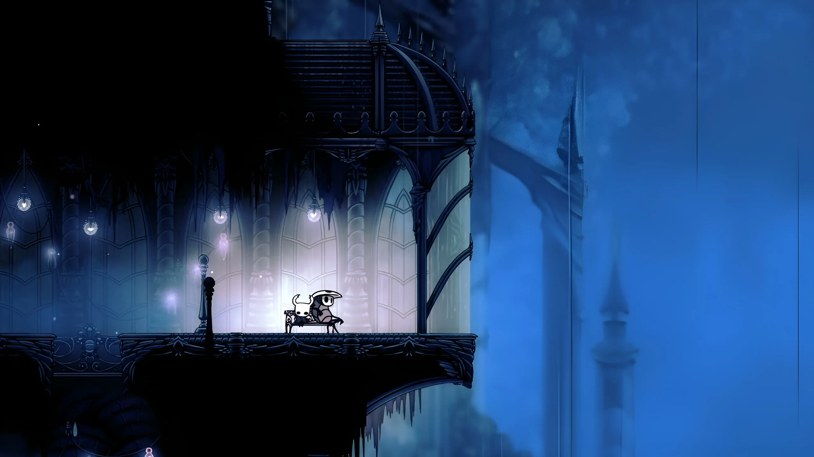
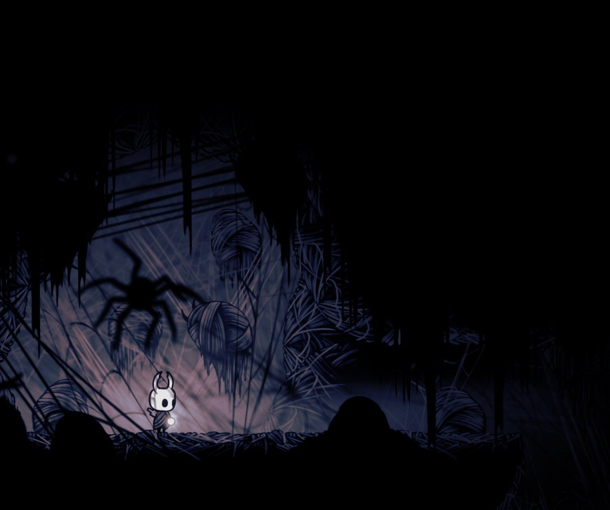
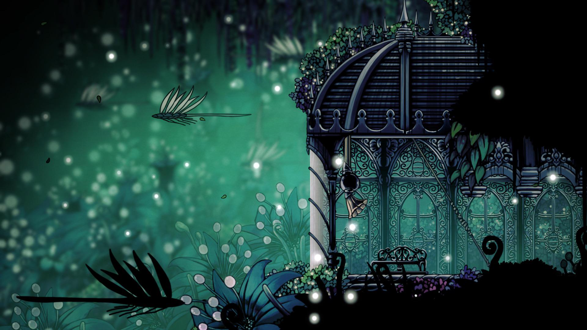
El sistema de mapeo no se actualiza automaticamnete al entrar en una nueva zona, para ver la nueva area es
necesario encontrar al cartografo Cornifer uno de los personajes mas caracteristicos
y emblematicos de este juegos, Cornifer nos vendera al mapa y automaticamnete cada que hagamos uso de un banco
se actyalizara el mapa con los descubrimientos que hicimos en la nueva zona
Progresion
La progresion en este juego no depende de ganar experiencia, sino de explorar, vencer desafíos y adquirir habilidades
Las principales formas de progrsion incliuyen:
Habilidades permanentes que permiten acceder a nuevas áreas (ej. doble salto, deslizamiento, nado en ácido)
Fragmentos de máscara que aumentan la vida máxima
Cristlaes de alma que aumentan la capacidad de almacenar alma
Amuletos objetos coleccionables que otorgan efectos pasivos como curación más rápida, aumento de daño, mayor movilidad, entre otros
Muerte persistente al morir deja una sombra en el lugar en el que cayo para luego ir por ella vencerla y recuperar los recursos como la geo que es la moneda del juego